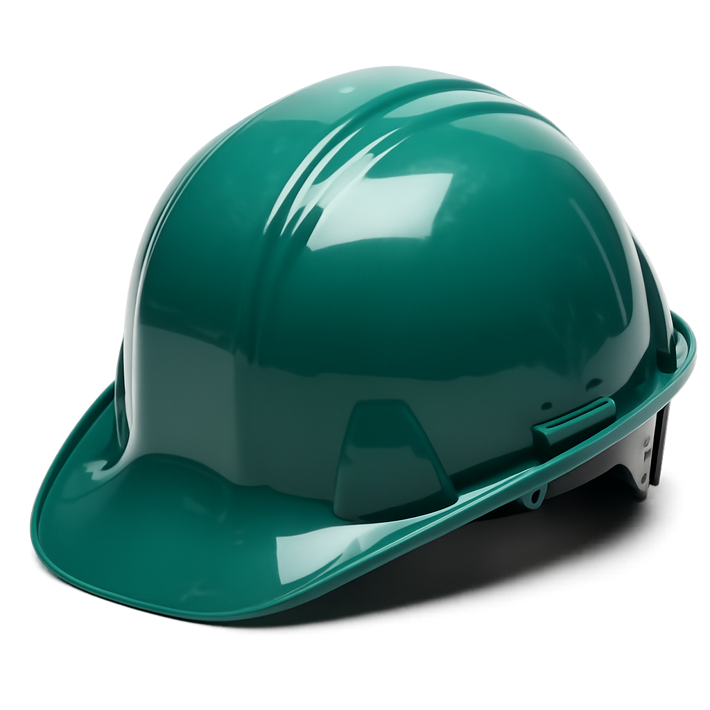

Уулын гүнд ажиллаж буй уурхайчдын хувьд каск буюу хамгаалалтын малгай нь хамгийн чухал хувийн хамгаалах хэрэгслийн нэг юм. Каск нь толгойг унаж болзошгүй чулуу, тоног төхөөрөмжийн цохилт, намхан таазнаас хамгаалдаг. Орчин үеийн уурхайн каскууд нь зөвхөн хамгаалалт төдийгүй гэрлийн суурь, кабелийн тогтоогч, харилцаа холбооны төхөөрөмж, амьсгалын хамгаалалт зэрэг бусад хэрэгслийг холбох боломжтойгоор бүтээгддэг.
Дамба ах хөөрхөн.
Каскны үндсэн шаардлага нь ANSI Z89.1 болон MSHA зэрэг олон улсын стандартуудыг хангах бөгөөд цохилт шингээх дотор зөөлөвчтэй байдаг. Ихэнх уурхайд каскны өнгөөр ажилчдын үүрэг, албан тушаалыг ялгаж харуулдаг нь аюулгүй ажиллагаа, зохион байгуулалтыг сайжруулдаг.
In underground hard rock mining, the hard hat is more than just a helmet—it is a lifeline. Designed to meet ANSI Z89.1 and MSHA standards, mining hard hats are built with impact-resistant shells and suspension systems that absorb shock from falling debris. Most models include lamp brackets and cord holders, allowing miners to securely attach cap lamps for visibility in dark tunnels. In addition, many mining operations use color-coded hard hats to distinguish roles (e.g., supervisors, engineers, contractors), which enhances communication and safety awareness in chaotic underground environments. Over time, mining helmets have evolved from simple protective shells to integrated safety systems, supporting respirators, earmuffs, and even radio communication devices.

🎥 Видео мэдээлэл
📚 Нэмж унших материал
- Хүдрийн далд уурхайн аюулгүй байдлын дүрэм
- OSHA Mining Safety Standards
- NIOSH Mining Safety Resources
⬅ Back to main page / Үндсэн хуудсанд буцах
📝 Quick Quiz / Богино тест
1. What is the primary purpose of a mining hard hat?
Fashion accessory
Protects against falling rocks and impacts
Communication device
2. Which standards must mining hard hats meet?
ANSI Z89.1 and MSHA
ISO 9001
None
3. Why do mines use color-coded hard hats?
To match uniforms
To distinguish roles and improve communication
To decorate helmets